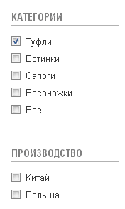
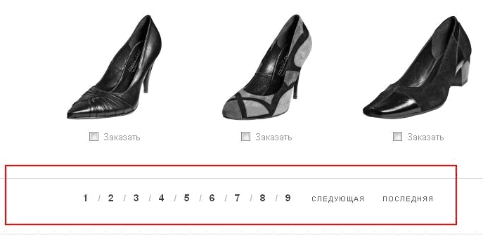
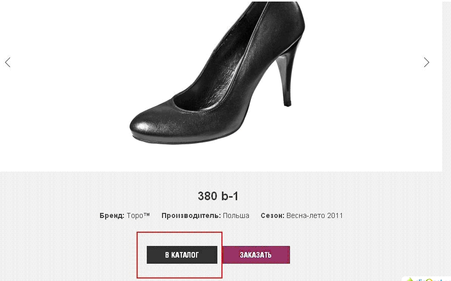

Есть вот такой сайт - http://topo.by/catalogue/female/0

В каталоге 2 линейки, влияющие на отображение товаров:
1. Выставляются настройки через чекбоксы


2. Постраничная навигация
При клике по модели - переход на детальную страницу

Нужно сделать так, чтобы при клике по кнопке "Каталог", пользователь возвращался в раздел каталога с теми же настройками (чекбоксы) и на ту же страницу, с которой он перешёл для просмотра модели.
Сейчас обнуляются и чекбоксы и пагинация. Т.е. чекбоксы сбрасываются, а постраничная навигация начинается с нуля.